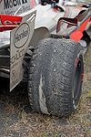

Piriódico:Jaimito: "Yo sí que merezco un Fewarri"
 De: La Frikipedia, la enciclopedia extremadamente seria.
De: La Frikipedia, la enciclopedia extremadamente seria.
El Piriódico entrevista en exclusiva a Jaimito
"Yo sí que merezco un Fewarri"

El McDonald's es una de sus pasiones
Lewis Hamilton, también conocido como Hamiltongo, Jaimito, Hamiltontón, Trámpliton, etc., es el clon idiota de Fernando Alonso y la mutación malvada del simpático negrito del Cola-Cao que gracias a las ayudas de los misioneros del Congo empezó a asistir de jovezuelo a un colegio de curas pervertidos donde según dice, le pilló el gustillo y de ahí vino luego "lo suyo con Dennis".
Luisito comenzó a darse al malotismo en el cole (¡incluso le robaba apuntes a su compi Gerifalcio el tuerto!).
En la actualidad, Lewis se dedica a dar vueltas a una carretera asfaltada muchas, muchas veces para pasar luego a otra y a otra y a otra, en un deporte súperdivertido llamado Fórmula 1. Nunca olvida el Manual de conducción de Fórmula 1 ni su Guía Personal Adaptada, aunque algún día tiene problemas.
Así fue la entrevista...
- Roteñito: Buenas tardes Jaimito, ¿Está preparado para comenzar?
- Jaimito: Venga dale, que me tengo que ir ya mismo a joderle el día a Fernando y no me va a dar tiempo.
- R: ¿Cómo se siente en estos momentos en su equipo McLata Mercedes?
- J: Ahora mismo estamos bastante jodíos, ya que desde que se fue el Sin-Cuello me tiene que hacer las telemetrías Pedrito para que no me pierda por los circuitos, ya que más de una vez he cogido por las escapatorias creyendo que ése era el recorrido.
- R: ¿Cómo es el ambiente en el equipo esta temporada?
- J: Bueno, ya los mecánicos y yo no tenemos a quien gastarle bromas en los boxes ni a quien poder vaciarle la presión de los neumáticos. Además desde que mi tío Ron se fue, ya nada es lo mismo por aquí. De todas formas siempre encontramos la forma de divertirnos, ya sea de discotecas los días antes de la carrera, o hablando con mi amigo Bernie tras las carrreras en su oficina de la MA(FIA).
- R: ¿Qué le pareció la implantación del KERS en la competición durante esta temporada?
- J: Pues bastante regular, ya que al ponérmelo tuve que aprender dónde estaba un nuevo botón en mi volante, que es tan complicado. Por eso decidimos eliminarlo, por si me equivocaba con otro botón que ya me ha jugado algunas malas pasadas. Ahora he estado hablando con diversos técnicos de Need For Speed, que me han propuesto el uso del Nitro a Base de Pedos para la próxima temporada, aunque para ello tendré que hablar antes con mi abuelo Bernie.
 Hamilton cuida muy bien de sus neumáticos
- R: ¿Quién es el que programa las dietas en su equipo?
- J: Mi madre siempre estará ahí para poder hacerme unos buenos platos caseros. Si no puede cocinar, siempre quedará mi querido y añorado McDonalds.
- R: ¿Qué opina de la sustitución de Luca Paquetoer por Giancarlo Fisiquera en el equipo Fewarri?
- J: Pues me parece muy mal, ya que Fisiquera no va a demostrar nada, al igual que hizo Paquetoer. Además Fernando tampoco tendría que fichar por Fewarri, ya que el rojo nunca ha sido su color preferido.
- R: Entonces, según lo que ha dicho, ¿quién se merece pilotar ese Fewarri vacante?
- 'J: Mira, yo sí que merezco un Fewarri, ya que con él podré ser el mejor
cheater piloto de la historia, consiguiendo dejar satisfecho a mi papaíto y dejar a Fernandito por los suelos.
- R: Pues hasta aquí la entrevista. Ha sido
una pérdida de tiempo un placer.
- J: De nada, ahora me iré a hablar con Bernie para aclarar el timo de Fernando en Singapur y luego le iré a joderle la mañana.
- R: Nos vemos
- J: Hasta
nunca otra
Autor(es):
- Lljosemll
- Kevrochi
- Roteñito
- Gñapero Solitario
- Antonioyedu
- Generibot
- Ericg
Frikipedia 2005-2016, Licencia
GFDL 1.2 - Extraído por FrikiLeaks